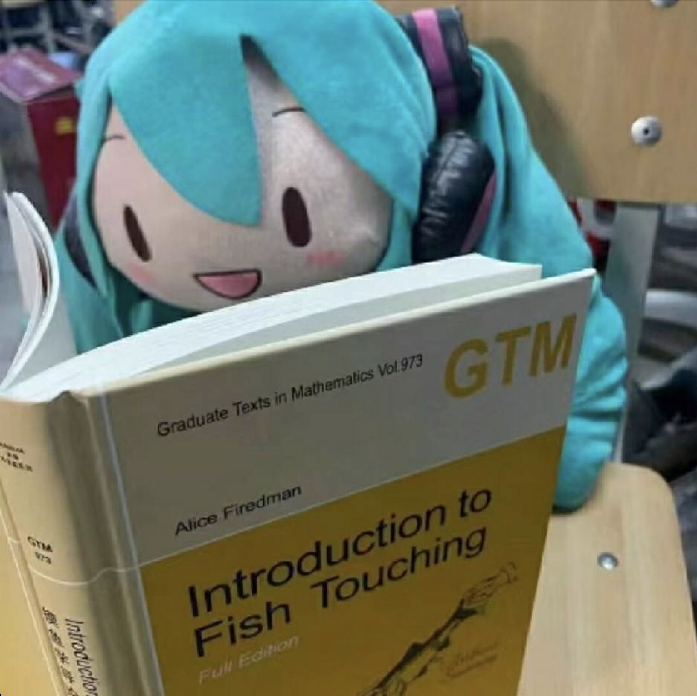

{kind=link}
Neuro-symbolic planning
Integrating symbolic concepts and foundation models for long-horizon, partially observable tasks.
Mathematics · Embodied AI · Robot Learning
I work on long-horizon robot manipulation and neuro-symbolic planning.
I am now at THU. Previously, I was at SJTU and HKU.

Open to collaboration · 2027 Fall
I am seeking remote research internships or assistant opportunities in robotics and embodied intelligence, particularly around neuro-symbolic robot manipulation and geometry-aware decision-making.
Current focus
Integrating symbolic concepts and foundation models for long-horizon, partially observable tasks.
Bringing task and motion planning into unified learning systems that can act under uncertainty.
Exploring learning-based humanoid robotics and Vision–Language–Action models.
A long-term personal benchmark: enable robots to sit at a table and play mahjong with humans. I support Slow Science.
Updates
Research output
Selected work across embodied AI, vision-language models, robot perception, and graph learning. I am fortunate to be advised by Edith Ngai, Jianping Wang, and Mengdi Xu, and grateful to collaborate with many wonderful colleagues. See the full list on Google Scholar. † denotes equal contribution.
Academic path
Institute for Interdisciplinary Information Sciences · Embodied intelligence
Generative models, manipulation, and reinforcement learning
Federated learning, fairness, and spatio-temporal graphs
University of Nottingham Ningbo China · Expected June 2028
Recognition & community
Aside